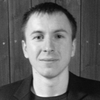
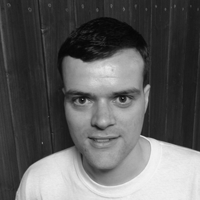

<div id="content">
  <div class="container txt-lefty">			
    <div class="row-fluid">
      <div class="span9">	
        <div class="entry">
          <div class="row-fluid">
            <div class="span12">
              <h3>GitLab.com</h3>
              <p>
              GitLab.com supports organizations and individuals using GitLab. To do this we offer services around GitLab such as subscriptions, consulting and cloud hosting.
              </p>
              <p>
              GitLab is a community project, for more information see <a href="http://gitlab.org/">GitLab.org</a>. GitLab.com is an active participant in this community, trying to serve its needs and lead by example.
              </p>
              <h3>Vision</h3>
              <p>
              Our vision is that everything digital that is touched more than once should be managed in distributed version control. This will allow people to cooperate faster, more efficiently and more pleasantly.
              </p>
              <h3>Mission</h3>
              <p>
              Our mission is to offer everyone great GitLab tools to cooperate on everything digital. These tools are free as in freedom, we believe you should be in control about where and how you manage your assets. In other words: "The source is yours!".
              </p>
              <p>
              Our software is free and open source for individuals and small and medium enterprises. Larger organizations can use the free tools or pay a reasonable price for additional features that are relevant to them.
              </p>
              <h3>Team</h3>
              <p>
              To be able to offer the best support possible we have a deep expertise in GitLab and all its aspects. The GitLab.com team consists of the following individuals:
              </p>
              <p>
              <h3>Dmitriy Zaporozhets</h3>
              <h4>co-founder, GitLab lead author</h4>
              </p>
              <p></p>                    
              <p>Dmitriy started GitLab in september 2011 and has released it every month on the 22nd since then. 
              He wanted to make a great and free project management system that he could use every day. 
              He loved to work on GitLab so much that in January of 2013 he began to work on GitLab fulltime. 
              When he has time he loves to code a major new GitLab feature in two days. 
              He loves a good Martini and a merge request that can be accepted without comments.
              </p>
              <p>&nbsp;</p>
              <p><h3>Sytse Sijbrandij</h3><h4>co-founder, GitLab core team</h4></p>
              <p></p>                    
              <p>
              Sytse saw the first ruby code in 2007 and loved it so much he dove head first into programming. 
              Before that he was engaged in business administration roles and combining that with software development is his passion. 
              He is always looking to make a template out of something or to automate a process. 
              His team members suspect he has todo list and reminders for everything, including breakfast and getting his hair cut. 
              He loves a good beer and organizing a tip to a conference.</p>
              <p>&nbsp;</p>
              <p><h3>Marin Jankovski</h3><h4>senior developer, GitLab core team</h4></p>
              <p></p>		                      
              <p>Marin loves to develop in Rails but has also grown an interest in operations, specifically Amazon Web Services and Opscode Chef. 
              When video conferencing with him you get a cat running accross the room as a bonus. 
              He is notorious for starting early in the morning just after breakfast and not having lunch until his workday is over. 
              You would expect him to be hungry and grumpy the last few hours but as long as his internet connection is up he is always friendly and upbeat. 
              He loves travelling and talking about politics.</p>
              <p>&nbsp;</p>
              <p><h3>Jacob Vosmaer</h3><h4>senior service engineer</h4></p>
              <p></p>
              <p>
              Jacob became a professional software developer in 2012 after a brief academic career which included obtaining a PhD in mathematics. 
              Motivated by his own experiences switching careers he has been helping others do the same, for instance by coaching at RailsGirls events. 
              Today he is excited to be working on open source software and helping organisations around the world collaborate better using Git and GitLab.
              </p>
              <p>
              <a href="../downloads/182BAD96.asc">Jacob's PGP public key</a>
              </p>
            </div>				
          </div>
        </div>
      </div>
    </div>
  </div>
</div>
